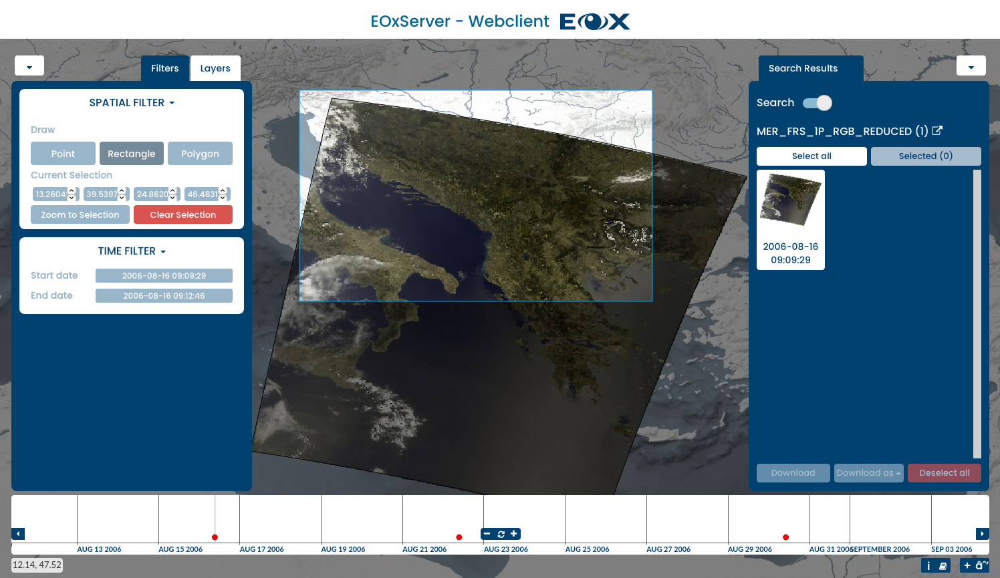
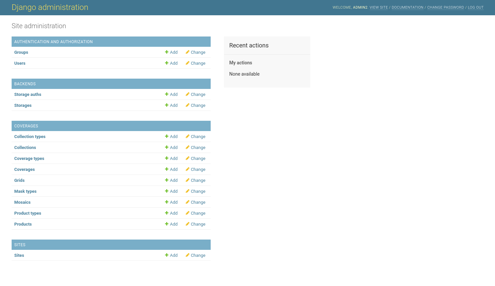
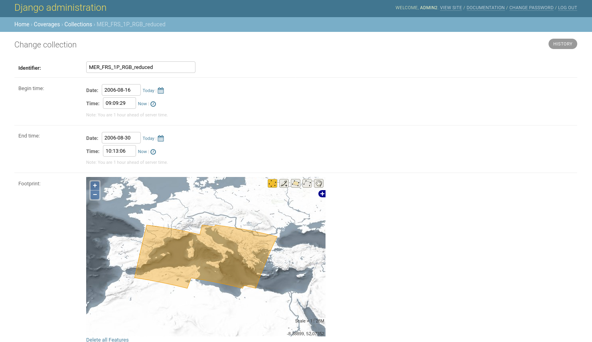

EOxServer Quickstart¶
EOxServer ist ein Server um große Archive von Erdbeobachtungsdaten (Earth Observation - EO) und Metadaten über offenen Standards zur Verfügung zu stellen. EOxServer basiert komplett auf Open Source Software wie Python, MapServer, Django / GeoDjango, GDAL, PROJ und einer SpatiaLite oder PostGIS Datenbank.
Dieses Quickstart beschreibt wie:
Verwenden des Webclients zum Anzeigen, Filtern, Erstellen von Subsets und Herunterladen von EO-Daten
Verwenden Sie den Admin-Client zum Durchsuchen der EO-Datenarchive
EoxServer starten¶
Wählen Sie . Es wird ein Browser mit der Demo-Instanz gestartet http://localhost/eoxserver/

Arbeiten mit dem Web-Client¶
Klicken Sie auf den Link Web Client, um den integrierten EOxServer-Client zu öffnen.
Innerhalb dieses Clients können Sie den Inhalt der EOxServer-Instanz untersuchen. Die Demoinstanz ist mit ENVISAT MERIS-Szenen gefüllt.

Der Client besteht aus der Kartenansicht und Widgets, die die Hauptinteraktionen enthalten. Der Hauptbereich ist das Karten-Widget des Clients mit einer Reihe von Datensätzen, die bereits angezeigt werden. Unten finden Sie das Zeitschiebe-Widget, mit dem Sie die Inhalte in der zeitlichen Dimension erkunden können.

Das Widget Layer-Auswahl kann durch Klicken auf das Zahnrad oben links erweitert werden, und es ermöglicht, die Sichtbarkeit zu aktivieren oder zu deaktivieren und das Rendern der Layer zu konfigurieren. Außerdem können Sie das Streets-Overlay ein- oder ausblenden und die Hintergrundebene auswählen. Die Registerkarte Filter in diesem Widget ermöglicht abfragen nach verschiedenen räumlichen und zeitlichen Kriterien.

Ähnlich wie bei einer Karte können Sie die aktuell sichtbare Zeit zoomen und können eine gewünschte Zeit auswählen, indem Sie auf den Bereich zeichnen, der die roten Punkte enthält. Sie können auch mit der Maus auf einen Punkt zeigen, um die Dataset-ID anzuzeigen. Durch Klicken auf den Punkt zoomt die Karte automatisch auf die Ausdehnung des Datasets.
{kind=link}
Wenn ein räumlicher Filter aktiviert ist, können Sie einen Begrenzungsrahmen, ein Polygon oder einen Punkt direkt auf der Karte zeichnen. Der gezeichnete Bereich wird für Abfragen innerhalb des Download-Tools verwendet.

Sie können weitere Informationen zu verfügbaren Diensten und Metadaten zum ausgewählten Produkt erhalten, indem Sie im Suchergebnis-Widget auf das Produkt zeigen und auf das Symbol oben rechts klicken.

Wenn das Download-Werkzeug aktiviert ist, wird eine Abfrage an den Server gesendet. Diese Abfrage enthält die ausgewählte Zeit und das Begrenzungsrechteck. Die Ergebnisse werden im Download-Widget angezeigt, wo Sie das Format, die Projektion und die Datensätze auswählen können, die heruntergeladen werden sollen.
This was a quick introduction to the EOxServer Web Client. Please refer to the online documentation for more information on this topic.
Arbeiten mit dem Admin-Client¶
Klicken Sie auf der EOxServer-Hauptseite auf den Link Admin Client und melden Sie sich mit dem Benutzer admin und dem Kennwort admin an.

The Admin Client is Djangos standard admin and allows you to configure the available data. Please feel free to explore the client. More information can be found in the operations‘ guide.
{kind=link}
Sie können z. B. die standardmäßig geladene Datensatz-Serie überprüfen, indem Sie auf den Link „Dataset-Serie“ und dann auf den Link „MER_FRS_1P_RGB_reduced“ klicken.
{kind=link}
Sie können eine Vorschau der Coverages anzeigen, indem Sie zurückgehen und auf den Link „Coverages“ klicken.

Was nun?¶
Dies ist eine einfache Demonstration, Sie können aber viel mehr mit EOxServer durchführen. Die Projektwebseite enthält viele Ressourcen, die Ihnen bei den ersten Schritten helfen. Hier sind ein paar Links die Sie als Nächstes anschauen können:
Weitere Informationen finden Sie in der EOxServer Overview Dokumentation.
Read the EOxServer Operations‘ Guide.
Read the EOxServer Basics.
Ready to use EOxServer? Then join the community on the mailing lists to exchange ideas, discuss potential software improvements, and ask questions.